Os sistemas operacionais evoluíram drasticamente ao longo de mais de cinco décadas, resultando em uma linhagem tecnológica vasta e heterogênea. Nem todos os modelos desenvolvidos alcançaram o mainstream, mas cada um contribuiu para o estado da arte atual.
Esta seção analisa nove variantes fundamentais, desde arquiteturas robustas para mainframes até microkernels para dispositivos vestíveis.
Isso estabelece uma base conceitual que será revisitada e aprofundada, permitindo uma compreensão clara de como o software de base se adapta a diferentes restrições de hardware e exigências de processamento.
Sistemas operacionais de computadores de grande porte
No topo da hierarquia encontram-se os mainframes. Diferenciam-se drasticamente dos PCs pela sua massiva capacidade de Entrada e Saída (E/S), gerenciando milhares de discos e volumes na escala de milhões de gigabytes, essencial para comércio eletrônico de larga escala (B2B).
Esses sistemas são orientados para processamento simultâneo e oferecem três modalidades:
Modalidade de Serviço
Características e Aplicações
Processamento em Lote (Batch)
Executa tarefas rotineiras automaticamente, sem usuário interativo (ex: apólices de seguros).
Processamento de Transações
Gerencia volume alto de pequenas requisições (ex: compensação de cheques, reservas aéreas).
Sistemas operacionais executam todas as funções acima de maneira integrada (ex: OS/390). Observa-se uma transição onde esses sistemas proprietários estão sendo substituídos por variantes UNIX, com destaque para o Linux.
Sistemas operacionais de computadores pessoais
A categoria voltada para computadores pessoais representa a interface mais comum da tecnologia no cotidiano. Atualmente, todos oferecem suporte nativo à multiprogramação, gerenciando dezenas de programas simultaneamente logo na inicialização.
O objetivo primordial é fornecer suporte robusto e intuitivo para um único usuário, facilitando tarefas essenciais como processamento de texto e navegação na internet.
Principais Exemplos
A literatura técnica destaca os seguintes sistemas:
Base Unix/BSD: Linux, FreeBSD e OS X (Apple).
Base Windows: Windows 7 e Windows 8.
Sistemas operacionais de tempo real
Definem-se pelo tratamento do tempo como parâmetro-chave, essenciais onde a precisão temporal dita o sucesso (ex: controle de maquinário industrial).
A classificação depende da tolerância a falhas temporais:
Categoria
Definição
Exemplos
Crítico (Hard)
Garantias absolutas de instante exato. Falha causa danos.
Indústria, aviônica.
Não Crítico (Soft)
Perda ocasional de prazo aceitável; sem danos permanentes.
Multimídia, smartphones.
Arquitetura e Eficiência
Para garantir prazos nos sistemas críticos, o SO muitas vezes funciona apenas como uma biblioteca conectada diretamente aos programas aplicativos (ex: eCos). Sem proteção entre partes, visando maximizar velocidade de resposta.
Há sobreposição com sistemas embarcados. A diferença: sistemas de tempo real voltam-se ao uso industrial e geralmente não permitem que o usuário adicione softwares próprios.
Conceitos de sistemas operacionais
A compreensão da arquitetura exige o domínio de certas abstrações basilares. Estas estruturas formam o vocabulário essencial para o gerenciamento de recursos em virtualmente todas as plataformas modernas:
Processos
Espaços de Endereçamento
Arquivos
Processos
O conceito de processo é a pedra angular, definido essencialmente como um programa em execução.
Todo processo funciona como um contêiner composto por:
Espaço de endereçamento: Faixa de memória (programa executável, dados, pilha).
Recursos: Registradores, contador de programa, ponteiro de pilha, arquivos abertos, alarmes.
O sistema operacional alterna periodicamente entre processos ativos. Quando um processo é suspenso, deve ser reiniciado no exato estado em que parou.
A Tabela de Processos
Armazena todas as informações do processo (exceto o espaço de endereçamento). Cada entrada guarda o estado dos registradores, ponteiros e dados críticos. Um processo suspenso consiste em sua imagem do núcleo e sua entrada na tabela.
Hierarquia de Processos
As chamadas de sistema gerenciam o ciclo de vida (ex: o shell cria um processo filho para executar o compilador). Como processos criam processos recursivamente, forma-se uma hierarquia:
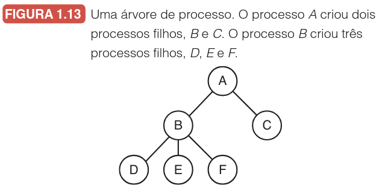
Identificador
Sigla
Descrição
Identificação do Usuário
UID
Herdada de quem o iniciou (incluindo filhos).
Identificação do Grupo
GID
Associa usuários a grupos para permissões.
Superusuário
Root
Poderes para sobrepor regras de proteção.
Processos utilizam sinais (análogos às interrupções de hardware) para comunicação assíncrona.
Espaços de endereçamento
A memória principal armazena programas em execução. A multiprogramação exige convivência de múltiplos programas e proteção robusta (implementada no hardware, gerida pelo SO).
Conceito
Definição
Memória Principal (Física)
Hardware real disponível para armazenamento volátil.
Espaço de Endereçamento
Conjunto de endereços lógicos que um processo pode utilizar.
O Desafio da Escala
Arquiteturas de 32/64 bits geram espaços de $2^{32}$ ou $2^{64}$ bytes, excedendo frequentemente a memória física instalada.
A Solução da Memória Virtual
O SO mantém parte do espaço na RAM e o resto no disco, fazendo swapping. O espaço de endereçamento é desacoplado da memória física, permitindo que o programa utilize mais memória lógica que física.
Arquivos e Diretórios
Uma função primordial do SO é ocultar peculiaridades dos discos, apresentando arquivos independentes do dispositivo manipulados via chamadas (criar, ler, escrever).
Para agrupamento, utiliza-se o conceito de diretório, formando uma hierarquia:
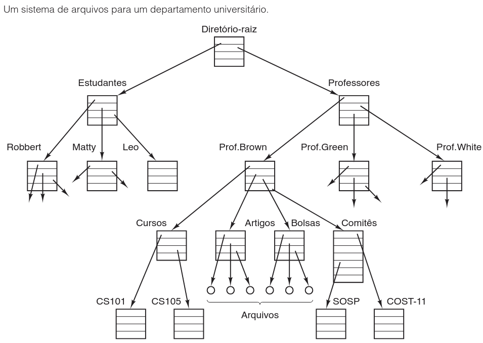
Característica
Hierarquia de Processos
Hierarquia de Arquivos
Profundidade
Rasa (raramente > 3).
Profunda (4, 5+ níveis).
Duração
Curta (minutos).
Longa (anos).
Controle
Restrito (pai-filho).
Amplo (grupos/usuários).
Nomes de Caminho e Montagem
Todo arquivo possui um nome de caminho (path) a partir do diretório-raiz (ex: /Professores/Prof.Brown/Cursos/CS101). Nomes relativos dependem do diretório de trabalho atual.
Convenção de Caminhos
O Windows usa barra invertida (\) por razões históricas. O UNIX e o ambiente acadêmico utilizam a barra (/).
A montagem (mount) integra sistemas de arquivos removíveis (CD-ROMs, USBs) à árvore principal, eliminando dependência de letras de unidade.
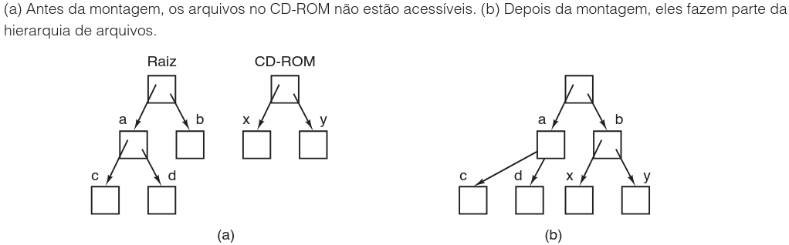
Arquivos Especiais, Pipes e E/S
O UNIX trata dispositivos como arquivos (arquivos especiais):
Bloco: Acesso direto (ex: discos).
Caracteres: Fluxo (ex: impressoras, modems).
Pipes: Pseudoarquivos conectando dois processos para comunicação (A escreve, B lê):
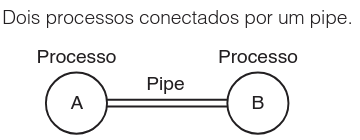
Entrada/Saída: O subsistema divide-se em software Independente do Dispositivo (interface padronizada genérica) e Específico do Dispositivo (drivers).
Proteção e o Shell
A proteção de arquivos no UNIX usa código de 9 bits para proprietário, grupo e outros (3 bits cada: Read, Write, Execute).
Interpretação do código rwxr-x--x
Proprietário (rwx): Leitura, escrita e execução.
Grupo (r-x): Leitura e execução (sem escrita).
Outros (--x): Apenas execução.
O Interpretador de Comandos (Shell)
O shell (ex: bash) não é o SO, mas a interface que invoca chamadas de sistema. Após exibir o prompt ($), lê o comando, cria processo filho, executa e aguarda.
Operador
Função
Exemplo
>
Saída
date >file
<
Entrada
sort <f1 >f2
|
Pipe
cat f1 f2 | sort
&
Background
command &
Questões de fixação - 1 / 3
1. O texto descreve a evolução e a diversidade dos sistemas operacionais. Associe corretamente o tipo de sistema operacional (Coluna A) à sua característica ou exemplo principal (Coluna B).
Coluna A
Coluna B
(1) Mainframe / Grande Porte
( ) O sistema operacional funciona frequentemente apenas como uma biblioteca ligada à aplicação; foca em prazos rígidos.
(2) Tempo Real Crítico (Hard)
( ) Otimizado para processar milhares de transações por segundo e gerenciar volumes massivos de E/S; ex: OS/390.
(3) Computadores Pessoais
( ) Sistemas onde a perda ocasional de um prazo é aceitável e não causa danos permanentes; ex: Áudio digital.
(4) Tempo Real Não Crítico (Soft)
( ) Focado em fornecer uma interface robusta para um único usuário e suportar multitarefa para aplicações de escritório e web.
Questões de fixação - 1 / 3 (Continuação)
5. A segurança em sistemas UNIX é gerida por bits de permissão. Considere um arquivo com as permissões exibidas como rwxr-x--x.
a) Converta essa representação simbólica para a notação octal utilizada pela chamada chmod (lembrando que r=4, w=2, x=1).
b) Descreva detalhadamente o que o Grupo e os Outros usuários podem e não podem fazer com este arquivo.
7. O sistema de arquivos UNIX permite a criação de links. Analise o cenário onde o usuário ast executa o comando link("/usr/jim/memo", "/usr/ast/note").
a) O conteúdo do arquivo memo é duplicado no disco para criar o arquivo note? Justifique usando o conceito de i-número.
b) Se o usuário jim remover o arquivo original memo usando unlink, o que acontece com o arquivo note de ast e com o conteúdo no disco? Explique o conceito de contador de referências.
Chamadas de Sistema
A interface entre programas e o SO ocorre através de chamadas de sistema (API POSIX). Um processo em modo usuário executa uma instrução de armadilha (TRAP) para transferir controle ao núcleo.
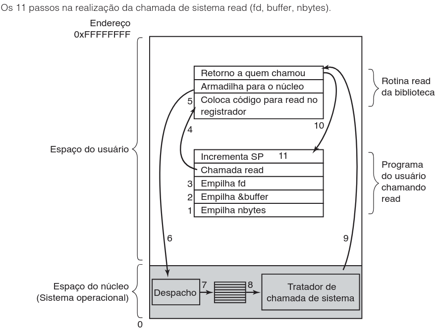
1-3. Empilhamento inverso (C) de parâmetros.
4-5. Chamada de biblioteca, prepara registrador.
TRAP: Muda modo usuário → núcleo.
7-8. Tabela de despacho e Execução.
9-11. Retorno e limpeza da pilha.
Chamadas de Sistema
TRAP vs. Chamada de Rotina
A TRAP muda de modo usuário para núcleo e salta para endereço fixo seguro (vetor de interrupção), diferentemente do CALL normal.
Gerenciamento de Processos
O processo original (pai) cria uma cópia (filho) com fork, duplicando descritores. Variáveis são independentes após a cópia. Retorna zero para filho e PID para o pai.
Chamada
Descrição
pid = fork()
Cria um processo filho idêntico ao pai.
waitpid(...)
Aguarda a conclusão de um processo filho.
execve(...)
Substitui a imagem do núcleo de um processo.
Lógica Simplificada do Shell
if (fork() != 0) {
waitpid(-1, &status, 0); /* Código do processo pai */
} else {
execve(command, parameters, 0); /* Código do processo filho */
}
Layout de Memória e Gerenciamento de Arquivos
Layout UNIX: Segmento de Texto (código), Dados (variáveis, cresce para cima, brk/malloc), e Pilha (cresce para baixo).
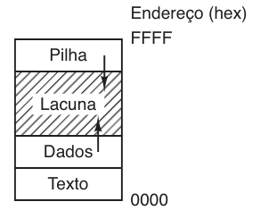
Arquivos:
open(file, flags): Retorna descritor de arquivo.
Flags: O_RDONLY, O_WRONLY, O_RDWR, O_CREAT.
read, write, close.
stat/fstat: Metadados do arquivo.
Layout de Memória e Gerenciamento de Arquivos
Funcionamento do lseek
O acesso aleatório usa lseek para alterar o ponteiro com base em: 1) Descritor; 2) Offset; 3) Referência (início, atual, fim).
Gerenciamento de Diretórios
Operações básicas: mkdir e rmdir.
A chamada link cria um i-número referenciado por múltiplos caminhos sem duplicar o arquivo físico.
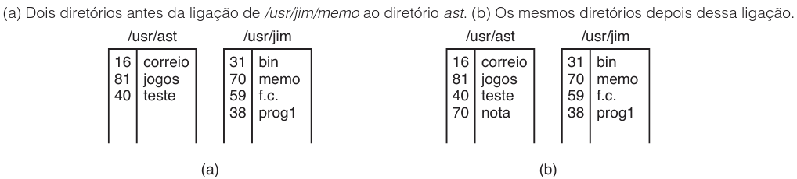
Estrutura de Diretório
O link cria apenas uma nova entrada de diretório apontando para um i-número existente. O arquivo é excluído apenas via unlink quando o contador de referências chegar a zero.
A chamada mount agrega dispositivos externos (/dev/sdb0) a um diretório na árvore (ex: /mnt), desconectados por umount.
Chamadas de sistema diversas
Chamada
Função Principal
chdir
Altera o diretório de trabalho atual (relativiza caminhos).
chmod
Altera a proteção (ex: octal 0644 = rw-r--r--).
kill
Envia sinais a processos (pode forçar encerramento).
time
Retorna segundos desde o "Epoch" (1º Janeiro 1970).
O Problema do Ano 2106
Computadores com 32 bits usando inteiro sem sinal ($2^{32} - 1$) atingirão seu limite em cerca de 136 anos após 1970, ou seja, em 2106. É recomendado migrar para 64 bits para evitar falhas sistêmicas análogas ao Bug do Milênio.
Questões de fixação - 2 / 3
2. Sobre o mecanismo de Chamadas de Sistema e a instrução TRAP, analise as afirmações abaixo e assinale a alternativa correta:
a) A instrução TRAP é idêntica a uma chamada de função comum (CALL), pois apenas desvia o fluxo para um endereço de memória onde reside a função do sistema.
b) A principal função da TRAP é alternar o estado do processador de modo usuário para modo núcleo (kernel), permitindo a execução de operações privilegiadas de forma segura.
c) As chamadas de sistema no padrão POSIX são executadas inteiramente em modo usuário para garantir que uma falha no driver não derrube o sistema operacional.
d) O comando read acessa diretamente o hardware do disco sem passar pelo sistema operacional, utilizando a TRAP apenas para notificar o término da leitura.
8. Ordene cronologicamente as etapas que ocorrem durante a execução da chamada de sistema read, conforme descrito na arquitetura monolítica/POSIX:
(A) A biblioteca coloca o número da chamada de sistema em um registrador.
(B) O tratador da chamada de sistema executa a operação solicitada (trabalho real).
(C) O programa do usuário empilha os parâmetros (nbytes, &buffer, fd).
(D) A instrução TRAP é executada, mudando para modo núcleo.
(E) O código do núcleo usa uma tabela de despacho para encontrar o tratador correto.
(F) A biblioteca retorna ao programa do usuário, que limpa a pilha.
Questões de fixação - 2 / 3 (Continuação)
4. O gerenciamento de processos utiliza chamadas específicas como fork e execve. Analise o trecho de código abaixo, que simula um shell simplificado, e responda:
a) Qual valor a chamada fork() retorna para o processo pai e qual valor ela retorna para o processo filho?
b) Qual é a função da chamada waitpid neste contexto e o que aconteceria com o shell (pai) se ela não fosse utilizada?
c) O que a chamada execve faz com a imagem de memória do processo filho?
Questões de fixação - 2 / 3 (Continuação)
3. Considere um sistema UNIX de 32 bits que utiliza um inteiro sem sinal para contar o tempo (chamada de sistema time). O texto menciona o "Problema do Ano 2106".
a) Explique o que é o "Epoch" e qual a data base utilizada.
b) Sabendo que o valor máximo de um inteiro sem sinal de 32 bits é $2^{32} - 1$, calcule aproximadamente quantos anos esse contador pode registrar a partir do Epoch.
c) Por que a migração para arquiteturas de 64 bits é recomendada para solucionar este problema definitivamente?
Estrutura de sistemas operacionais
A arquitetura interna revela o espectro de possibilidades de design. Adotamos um paralelo entre POSIX e a Win32 API para demonstrar a equivalência funcional, embora o Windows tenha chamadas mais complexas.
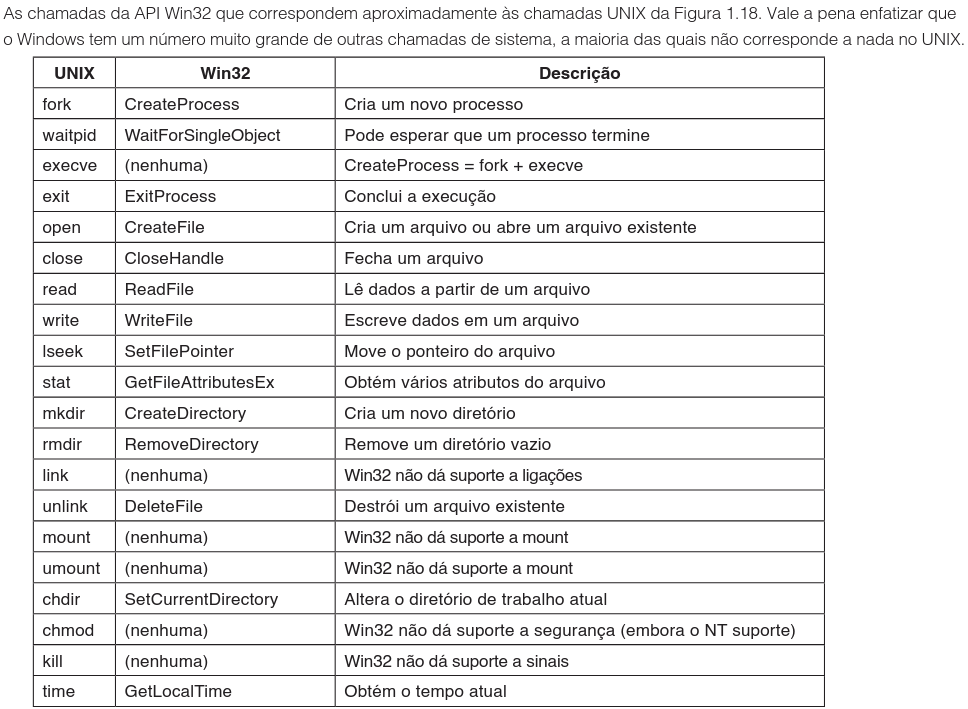
Estrutura de sistemas operacionais
Funcionalidade
UNIX
Win32 API
Criação
fork
CreateProcess
Espera
waitpid
WaitForSingleObject
Execução
execve
(CreateProcess)
Abrir Arq.
open
CreateFile
As abordagens arquiteturais principais são: Monolíticos, Camadas, Micronúcleos, Cliente-Servidor, Máquinas Virtuais.
Sistemas monolíticos e de camadas
Sistemas Monolíticos:
Único grande binário em modo núcleo. Alta eficiência, mas baixa estabilidade (um driver derruba tudo). Uso de extensões dinâmicas (DLLs).
Três níveis lógicos: Principal, Serviço, Utilitárias.
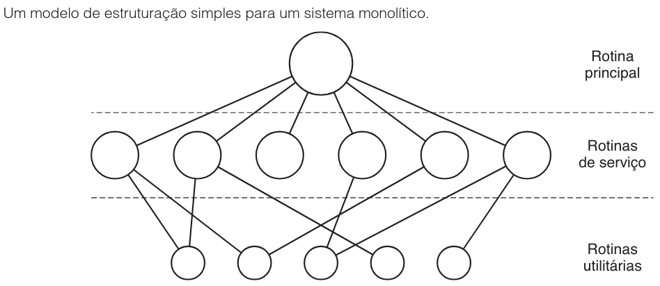
Sistemas de Camadas:
Hierarquia onde cada nível abstrai hardware (ex: sistema THE).
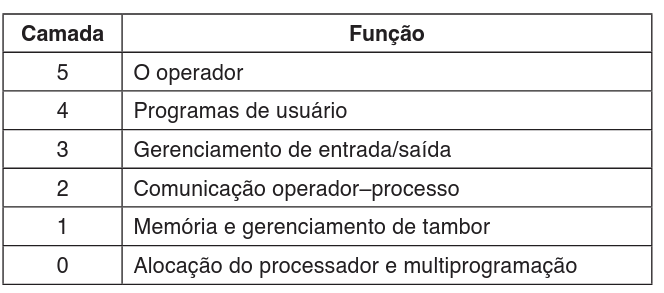
MULTICS: Usava anéis concêntricos apoiados em hardware para separar privilégios, não apenas como suporte de projeto de software.
Micronúcleos
O objetivo é máxima confiabilidade. Monolíticos podem ter milhares de bugs no núcleo. O micronúcleo mantém o mínimo código em modo privilegiado. Drivers e sistemas de arquivos rodam como processos em espaço de usuário. Uma falha de driver isola-se sem derrubar o SO.
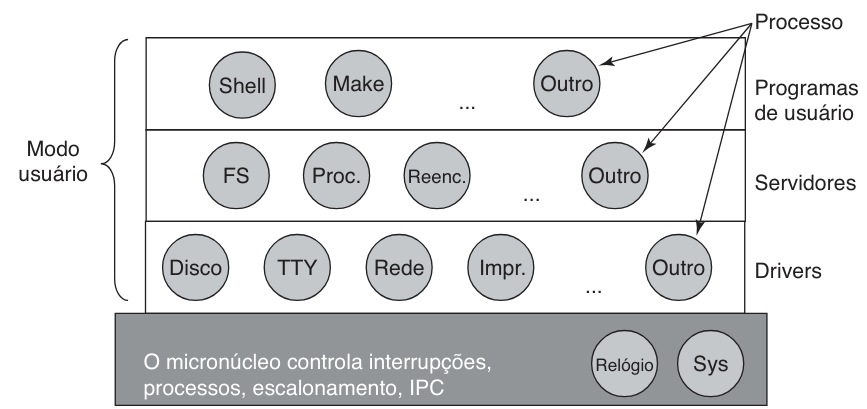
Exemplo: MINIX 3
Núcleo gerencia apenas interrupções, escalonamento e mensagens.
O Servidor de Reencarnação
Monitora drivers e servidores em usuário. Se falharem, são substituídos automaticamente, conferindo "autocura".
O modelo cliente-servidor
Derivado do micronúcleo, divide processos em servidores (prestam serviço) e clientes (consomem). A comunicação dá-se por troca de mensagens.
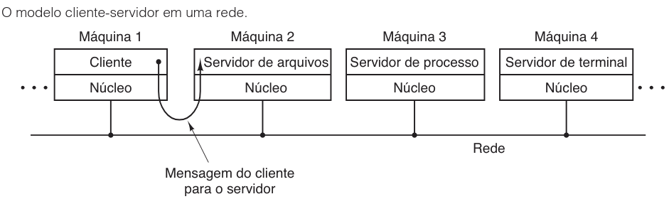
Componente
Função Principal
Cliente
Envia requisição via mensagem (ex: Navegador).
Servidor
Processa requisição e retorna (ex: Servidor Web).
Rede/Kernel
Transporta a mensagem com transparência.
A grande vantagem é a transparência de localização: o cliente ignora se o servidor é local ou via rede distribuída.
Máquinas virtuais
Historicamente iniciada com CP/CMS e VM/370 (hoje z/VM). O Monitor (Hipervisor) separa multiprogramação da abstração; fornece cópias exatas do hardware físico (modo núcleo, E/S).
Não simula hardware físico. Compila código para bytecode de uma máquina abstrata (JVM), que o interpreta no destino.
Vantagem: Extrema portabilidade ("escreva uma vez, rode em qualquer lugar").
Segurança: Sandbox evita danos por códigos maliciosos da Web.
Questões de fixação - 3 / 3
6. Sobre as Arquiteturas de Sistemas Operacionais, marque (V) para Verdadeiro ou (F) para Falso:
( ) Sistemas Monolíticos: Todo o sistema operacional roda como um único programa em modo núcleo; uma falha em um driver de áudio pode travar todo o computador.
( ) Micronúcleos: Visam alta confiabilidade movendo a maior parte do código (como drivers e sistemas de arquivos) para o espaço do usuário; ex: MINIX 3.
( ) Sistemas de Camadas: No modelo do sistema THE, a camada de mais alto nível era responsável pelo gerenciamento de memória e paginação.
( ) Máquinas Virtuais (Tipo 2): O hipervisor roda diretamente sobre o hardware ("bare metal"), sem a necessidade de um sistema operacional hospedeiro como Windows ou Linux.
Questões de fixação - 3 / 3 (Continuação)
9. Diferencie Hipervisores de Tipo 1 e Hipervisores de Tipo 2 com base em:
a) Localização da execução (sobre o que eles rodam?).
b) Exemplos de softwares comerciais citados no texto para cada tipo.
10. Explique a filosofia do Modelo Cliente-Servidor em sistemas operacionais locais (não em rede) e como ela se relaciona com a arquitetura de Micronúcleos. Cite o benefício de "transparência de localização" mencionado no texto.
Próximos passos
Na próxima aula, Processos e Threads, aprofundaremos nossa visão sobre a unidade fundamental de execução.
Deixaremos de ver o processo apenas como uma abstração estática para entender sua dinâmica interna:
Estados de execução
Escalonamento
A distinção crucial entre processos pesados e threads leves.
Investigaremos como o sistema operacional orquestra a alternância rápida da CPU para criar a ilusão de paralelismo e como evitar condições de corrida em ambientes concorrentes.
"""